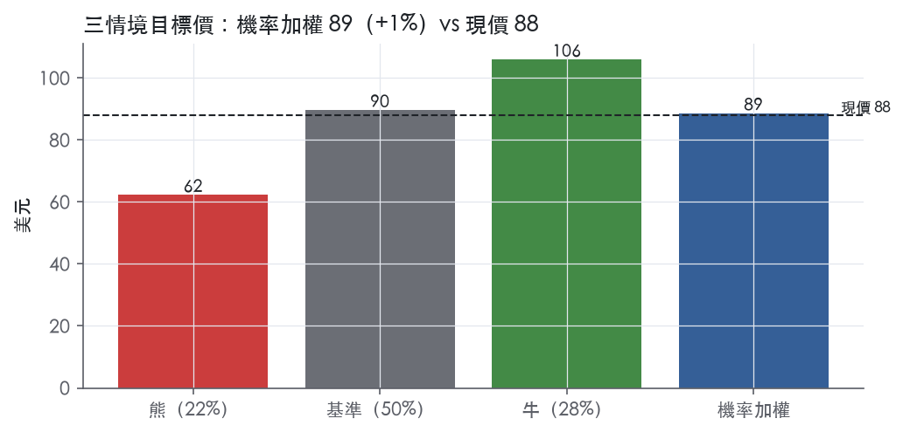
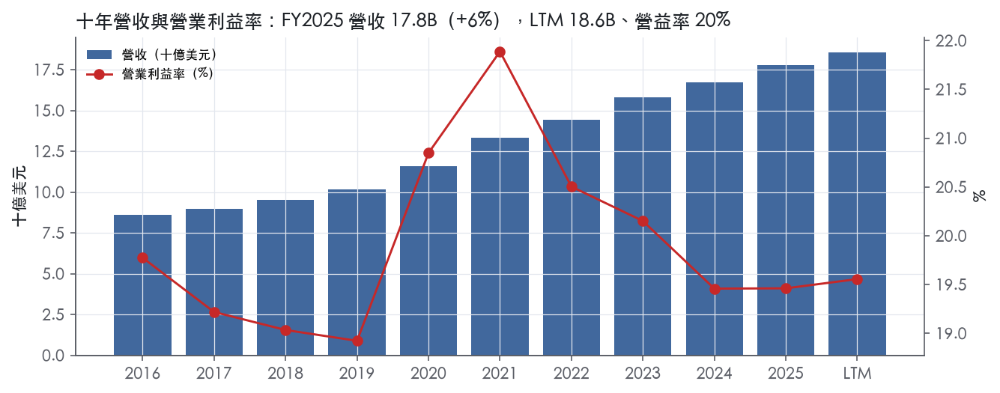
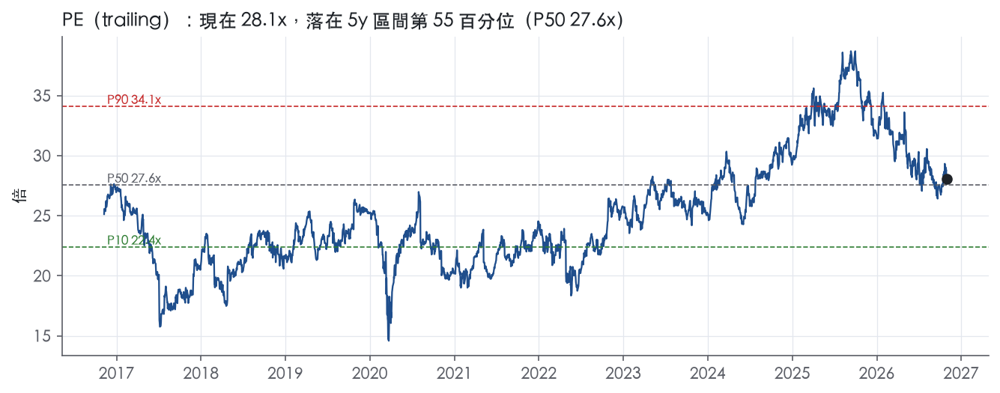
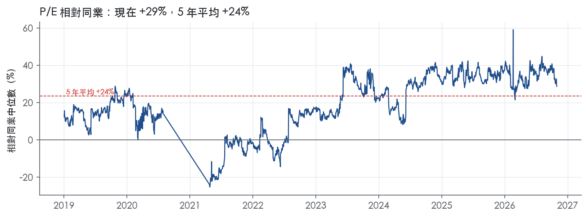
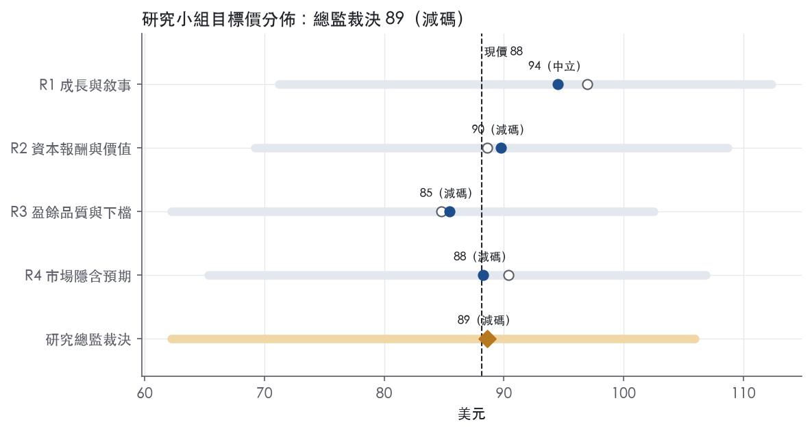
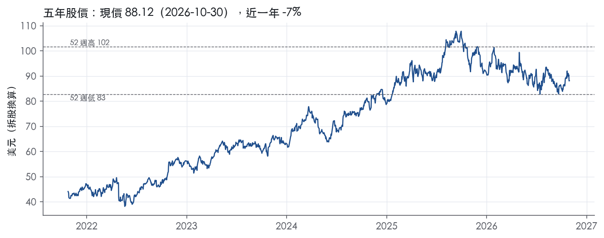

評等總表 › 非必需消費 › ORLY
指引已示減速，25倍難守，偏空｜評等 減碼｜目標價 89
| 報告日 | 評等 | 目標價 | 當時股價 | 超額報酬 |
|---|---|---|---|---|
| 2026-10-30 | 減碼 | 88.59 | 88.12 | -9.4% |
| 評等 | 減碼 |
| 12 個月目標價 | 89 美元 |
| 現價 | 88.12 美元（2026-10-30） |
| 預期報酬 | 股價 +0.5%＋股息 0.0%＝總報酬 +0.5%；同業籃門檻 10.0%，超額 -9.4% |
| 估值方法 | P/E 23.5x，套在第 5–8 季的EPS（也就是一年後的未來四季） |
| 三情境 | 熊 62／基準 90／牛 106 |
| 研究流程 | 四位研究員兩輪辯論＋研究總監裁決 |
| 資料來源 | SEC EDGAR XBRL、Tiingo、FRED（全免費） |
指引已示減速，25倍難守，偏空（研究總監裁決，四位研究員兩輪辯論後）
評等 減碼｜12 個月目標價 89 美元（總監三情境機率加權 88 與研究員中位數 89 各半）｜現價 88.12（2026-10-30）
預期報酬：股價 +0.5%＋股息 0.0%＝總報酬 +0.5%。同業籃門檻 10.0%，超額 -9.4%。
估值方法：P/E 23.5x，套在第 5–8 季的EPS（也就是一年後的未來四季）。三情境：熊 62（22%）／基準 90（50%）／牛 106（28%）。
什麼會讓研究總監改變看法：2027 年 2 月 FY2027 同店指引下緣 ≥5% 且 Q4 同店 >5.5%，倍數上移到市場持平 25x、立場轉中性；FY2027Q2 營益率剔除一次性後仍 ≥20.4%，營益率路徑改 R1 並上調牛機率。
| 過去四季（實際，FY2026Q2） | 未來四季 | 第 5–8 季 | 第 9–12 季 | |
|---|---|---|---|---|
| 營收（B） | 18.6B | 19.8B | 21.1B | 22.4B |
| 營收成長 | 8.5% | 6.8% | 6.5% | 5.8% |
| 營業利益率 | 19.6% | 19.9% | 19.6% | 19.6% |
| EPS（美元） | 3.14 | 3.51 | 3.81 | 4.19 |
| EPS 成長 | 12.6% | 11.8% | 8.7% | 10.0% |
| 每股股息（美元） | — | 0.00 | 0.00 | 0.00 |
| P/E（現價） | 28.1x | 25.1x | 23.1x | 21.0x |
| 股息殖利率（現價） | — | — | — | — |
過去四季為申報數字；預測為研究總監的假設、程式計算。倍數與殖利率都用現價計算，用來看現價對應各期獲利的高低。
| 情境 | 機率（歷史） | 故事 | 未來四季營收成長 | 第 5–8 季營益率 | 倍數 | 目標價 | 股價漲跌 |
|---|---|---|---|---|---|---|---|
| 熊 | 22%（19%） | 風險表第 1 條同店正常化到 2–3% 加第 3 條關稅退款反轉，複製 FY2022 的毛利與營益率回落；總經下行路徑（失業 5.1、利差 2.30）觸發第 2 條舉債回購減速，溢價向 AZO 收斂 | 4.0% | 18.4% | 19.0x | 62 | -29.4% |
| 基準 | 50%（53%） | 指引隱含的 Q4 減速兌現，2027 同店回到中個位數，營益率持平、回購維持 −3.4%，前瞻倍數由 25x 壓到 23.5x | 6.8% | 19.6% | 23.5x | 90 | 1.7% |
| 牛 | 28%（28%） | Q4 頂到指引上緣、AAP 萎縮的專業份額移轉延續到 2027，同店守 6–7%、SG&A 再槓桿，前瞻倍數守在持平 25x 之上；總經取上行路徑油價 72 | 8.0% | 20.4% | 26.0x | 106 | 20.2% |
目標價由程式依研究總監的驅動與倍數計算；機率由研究總監給定。括號內是歷史頻率：把這檔股票過去十年 12 個月報酬的波動形狀，置中在基準情境，結果落在各情境附近的比例。

四位研究員用不同方法各自估值，回應研究總監的質疑後交出第二輪，最後由總監逐點裁決。各研究員的主張見第七章，裁決理由見第八章，完整論證見《研究底稿》。
| 立場（一輪→二輪） | 加權目標價（一輪→二輪） | 評等（一輪→二輪） | 第二輪倍數 | 熊～牛目標價 | |
|---|---|---|---|---|---|
| R1 成長與敘事 | 中性→中性 | 97→94 | 中立→中立 | 28.0x | 71～112 |
| R2 資本報酬與價值 | 看空→看空 | 89→90 | 減碼→減碼 | 26.0x | 69～109 |
| R3 盈餘品質與下檔 | 中性→看空 | 85→85 | 減碼→減碼 | 23.0x | 62～103 |
| R4 市場隱含預期 | 看空→看空 | 90→88 | 減碼→減碼 | 23.5x | 65～107 |
| 研究總監裁決 | 看空 | 89 | 減碼 | 23.5x | 62～106 |
目標價由程式依各自的驅動與倍數計算；評等＝機率加權總報酬 − 同業籃門檻。
O’Reilly 是北美最大的汽車後市場零件專業零售商之一，同時服務 DIY 消費者與專業維修業者（professional service provider），即所謂「雙市場策略」¹。公司成立於1957年，由 Charles F. O’Reilly 與其子創立於密蘇里州 Springfield，普通股自1993年4月22日起在 Nasdaq 以 ORLY 掛牌¹。截至2025年12月31日，公司在美國48州及波多黎各經營6,447家門市，在墨西哥112家、加拿大26家¹。2025年DIY與專業客戶各約佔銷售的50%，且歷史上專業客戶銷售成長速度快於DIY，因為該業務更為分散、整併機會更大¹。公司本質是一家靠密集展店、區域分層配送、技術型店員服務堆出來的連鎖零售商，不是電商顛覆型模式，這使其能在大城市與人口稀疏地區同時盈利。
公司未按地理或客群劃分對外報導分部，10-K未揭露按DIY／專業拆分的營收數字，僅揭露銷售佔比約各50%¹。產品線涵蓋新品與整修件、保養用品（電池、刹車系統、皮帶、底盤、引擎件、油品、雨刷等）及配件（腳踏墊、座椅套、貨卡配件）¹。公司採用知名品牌（AC Delco、Bosch、Castrol、NGK、Valvoline等）加上多層次自有品牌（BrakeBest、Super-Start、MasterPro等），橫跨「好、更好、最好」價格帶¹。美國門市平均庫存約24,000個SKU，平均門市面積約8,000平方英尺，2025年底美國門市總面積約52百萬平方英尺¹。配送網路是核心基礎設施：32個配送中心（約14.0百萬平方英尺），平均備貨逾156,000個SKU，另有399家Hub門市平均備貨63,000個SKU（部分市場達115,000個SKU），逾95%門市每日多次配送¹。公司不賣輪胎、不做付費維修安裝，其所稱美國可服務市場規模約1,650億至1,750億美元，涵蓋整體約4,350億美元產業中的批發零件與DIY零售部分¹。
公司業務高度集中於美國，地理分布上以德州（13.3%門市佔比）、加州（9.2%）、佛州（4.8%）為前三大州，墨西哥與加拿大門市合計僅佔約2.1%¹。2025年淨新增207家門市，其中墨西哥擴張最快（淨增25家，年增幅12.1%）¹。通路上採實體門市加Omnichannel雙軌：零售端經營 OReillyAuto.com 與行動應用；專業客戶端經營 OReillyPro.com 與O’Reilly Pro App，提供線上下單與區域配送¹。供應端集中度不高但有頭部供應商：公司自逾655家供應商採購，前五大供應商合計約佔總採購23%，最大供應商約佔8%¹。主要競爭對手為AutoZone、Advance Auto Parts、CARQUEST、NAPA等全國性連鎖，以及沃爾瑪、Amazon等泛零售商¹。公司地理與客群結構顯示其成長引擎仍以美國本土展店密度為主，墨西哥是尚處早期但擴張速度最快的國際市場。
FY2025Q4（2025-12-31）營收4.41B，年增7.8%，營益率18.8%（dv相關）。FY2026Q1營收4.56B，年增10.2%，營益率18.5%（ltm.*系列資料包）。FY2026Q2營收4.89B，年增8%，較去年同期4.53B增加367M美元，毛利率51.4%（與去年同期持平），營業利益986M美元（佔銷售20.2%，與去年同期持平），淨利715M美元（年增7%），稀釋EPS 0.86美元（年增10%）²。該季公司將全年同店銷售成長指引上修至4%至6%，全年營收指引18.9B至19.2B美元，全年FCF指引1.8B至2.1B美元²。FY2026Q3（2026-09-30）營收5.12B，年增9%（增加416M美元），毛利率提升至52.4%（去年同期51.9%），營業利益1.10B美元（佔銷售21.4%，去年同期20.7%），淨利786M美元（年增8%），稀釋EPS 0.97美元（年增14%），該季包含3,900萬美元關稅退款挹注³。公司同店銷售成長7.2%，為連續兩年疊加12.8%的高基期增長，專業業務雙位數成長、DIY中個位數成長³。公司再次上修全年指引：同店銷售5.5%至6.5%，毛利率51.6%至52.1%，營業利益率19.5%至20.0%，全年營收19.0B至19.3B美元，稀釋EPS 3.25至3.35美元，FCF 1.9B至2.2B美元³。整體趨勢是同店銷售加速、毛利率逐季改善、指引持續上修，第三季的EPS高成長部分受惠一次性關稅退款。
公司列出的五大成長策略為：積極展店（2025年淨增207家，2026年計畫淨增225至235家）、既有門市同店銷售成長、精選策略性併購（整併高度分散的後市場產業）、持續優化門市設計與選址（2025年翻新約700家門市、搬遷35家）、以及Omnichannel成長策略（深化OReillyAuto.com與OReillyPro.com的數位體驗）¹。公司強調其競爭優勢來自雙市場策略執行力、技術型店員（Professional Parts People）、策略性分層配送網路，及「內部晉升」為主的經驗管理團隊，並稱自1993年掛牌以來已連續33年創造營收與獲利紀錄及正向同店銷售¹。CEO Brad Beckham在最新財報中將第三季表現歸因於雙邊市場的份額提升（專業業務雙位數成長、DIY中個位數成長）與關稅退款挹注EPS³。公司成長引擎本質上是「展店＋同店銷售＋配送網路深化」的傳統零售複利模型，而非結構性轉型故事，近兩季指引連續上修反映需求面確實優於年初預期，但第三季14%的EPS成長有一次性稀釋股數下降（股票回購）與關稅退款共同貢獻，需拆分看待基本面動能的真實強度。資本配置上，公司2026年前九個月已回購38.5M股、投入3.47B美元，顯示管理層在成長與股東回報間明顯偏向持續大幅回購。

O'Reilly 給寬護城河評級，趨勢穩定。核心是區域分層配送網路加上門市叢集形成的效率規模與成本優勢，專業維修客戶端的轉換成本為輔，我們有把握未來 10 年以上 ROIC 仍高於資本成本。過去 9 年 ROIC 每一年都高於 10.0% 的資本成本代理值，最低一年也有 34.4%，這是評級的數字依據。趨勢不給「變寬」，因為 FCF 利潤率從最高 20.7% 降到最新 9.0%，守住護城河的成本正在上升。
第一來源是效率規模，第二是成本優勢，第三是專業客戶的轉換成本；網路效應與無形資產證據不足，不列。
效率規模：公司營運 32 個配送中心，通常讓門市當日或隔夜取得逾 156,000 個 SKU，其中許多是其他汽車零件零售商通常不備的難找品項¹。公司另有 399 家 Hub 門市，平均備貨 63,000 個 SKU，部分市場最高約 115,000 個 SKU¹。逾 95% 的門市每天收到多次當日配送，週末也有配送¹。單一區域的零件需求總量有限，已經鋪好配送中心、Hub 與門市叢集的業者能做到當日到貨；後進者必須先投入整套網路，再分攤到不夠大的量上，經濟上不划算。公司也表示，雙市場策略讓它能在人口稀疏、原本撐不起全國連鎖的地區獲利經營¹。小市場容不下第二家同等規模的網路，這是效率規模最典型的形態。
成本優勢：公司向逾 655 家供應商大量採購，前五大合計約佔總採購 23%¹。公司主要靠供應商獎勵方案、採購量放大帶來的規模經濟和選擇性提前採購，抵銷商品成本上漲¹。全行業漲價時，公司通常能把增加的成本轉嫁到零售價¹。公司另有橫跨好、更好、最好三個層級的自有品牌（BrakeBest、Super-Start、MasterPro 等）¹。規模採購加上自有品牌，讓毛利率在通膨期間守得住，這是成本面的護城河，不是品牌定價權。
轉換成本（專業客戶）：公司為專業客戶提供專屬下單 App、OReillyPro.com 電商平台、每日多次配送，以及 Certified Auto Repair 計畫¹。公司約有 825 名全職業務人員，專門拜訪與服務專業客戶¹。維修廠的瓶頸是工位周轉；供應商一旦把到貨可靠度嵌進維修廠的作業流程，換供應商的代價是停工風險，而不是價差。不過這種轉換成本偏弱，雙方沒有綁約，只要對手做到同等可靠就能搶走客戶，所以只當輔助來源。
看得到，而且以零售業來說相當乾淨。ROIC 十年平均 54.5%，減去資本成本後超額 44.5%，有資料的 9 年中 9 年高於資本成本。毛利率標準差 0.7%，十年區間 51.2%–53.1%；營益率標準差 0.9%，十年區間 18.9%–21.9%。這段期間經歷了疫情需求暴衝和之後的高通膨，利潤率仍幾乎不動，符合寬護城河的特徵。
數字上有三處衝突，照實列出。
第一，ROIC 標準差 14.4%，不算小。但 ROIC 在 34.4%–73.7% 之間擺動，從未接近資本成本，而且同期營益率幾乎不變；波動主要來自分母（投入資本），不是獲利能力本身，因此不影響評級。公司利用供應商提供的延長付款條件採購存貨¹。這類供應商融資會壓低投入資本、墊高 ROIC，所以 ROIC 的絕對水準要打折看，但打折後仍遠高於資本成本。
第二，ROE 最新 -237.8%、十年平均 700.5%、標準差 1851.8%，完全不能用。這是股東權益因大規模回購轉為負值的會計結果，不是護城河訊號，我們不採用。
第三，FCF 利潤率十年平均 13.9%，從最高 20.7% 降到最新 9.0%，這是評級的真正疑點。營益率沒有掉、FCF 卻掉，代表維持可得性所需的資本支出與庫存投入變重了。10-K 也明說，雙市場策略需要大量資本，包括配送與門市網路的資本支出，以及維持庫存所需的營運資金¹。我們仍維持寬評級，因為這筆投入是在 ROIC 仍有 59.7%的情況下發生，性質是加深護城河的再投資。下修條件也先講清楚：如果 ROIC 往 34.4% 的歷史低點靠近，而 FCF 利潤率沒有回升，就下修為窄。
最直接的壓力來自人口密集市場的競爭，公司自己承認在這些市場持續面對激烈競爭¹。公司列出的競爭者包括 Wal-Mart、Amazon 等量販與線上零售商¹。線上通路對 DIY 保養品類的威脅，大於對急件硬零件的威脅；專業客戶要的是當日到貨，那正是配送網路守得住的區塊。
第二個風險是同業加碼配送：如果 AutoZone 等全國連鎖在同一區域複製 Hub 密度，效率規模的獨占性就會被稀釋，這會先反映在 ROIC，之後才看得到營益率變化。
第三個風險是車隊電動化，長期會減少引擎件、燃油泵、濾清器等品項的需求，但時間尺度超過 10 年，對本評級期間的影響有限。
第四個風險是財務槓桿：淨負債 6.75B 美元不會侵蝕經營面的護城河，但會壓縮景氣下行時的再投資彈性。
目標倍數應相對同業溢價。理由是十年 ROIC 從未低於 34.4%、營益率標準差只有 0.9%，撐得起較長的超額報酬期，終值也不需要大幅折扣。不過溢價不宜再擴大：目前 trailing P/E 28.1x 已與 5 年中位數 27.6x 相當，加上 FCF 利潤率下滑、盈餘轉現金的效率變差，採用 P/FCF 時應比 P/E 更保守。
| 指標 | 最新 | 十年平均 | 標準差 | 最低 | 最高 |
|---|---|---|---|---|---|
| ROIC | 59.7% | 54.5% | 14.4% | 34.4% | 73.7% |
| 毛利率 | 51.6% | 52.1% | 0.7% | 51.2% | 53.1% |
| 營業利益率 | 19.5% | 19.9% | 0.9% | 18.9% | 21.9% |
| FCF 利潤率 | 9.0% | 13.9% | 4.0% | 9.0% | 20.7% |
| ROE | -237.8% | 700.5% | 1851.8% | -385.5% | 5863.6% |
程式計算。資本成本代理值（10 年債＋5%）：10.0%；ROIC 平均減資本成本：44.5%；ROIC 有資料的 9 年中，高於資本成本 9 年。
O'Reilly 的盈餘品質整體可信，LTM 營業現金流／淨利 1.24x、應計比率 -3.7%，顯示盈餘有現金支撐、不靠應計堆砌。但淨負債／EBITDA 1.62x 轉黃燈、FCF／淨利僅 0.81x，加上存貨成長快於營收，屬於需要解釋但非致命的瑕疵。
現金基本跟得上盈餘，但資本支出壓縮了自由現金流轉換率。LTM 營業現金流／淨利 1.24x，近三年平均 1.22x，十年平均 1.34x，均在綠燈區。FCF／淨利 LTM 0.81x、近三年 0.78x，均低於十年平均 0.97x，亮黃燈，主因資本支出／營收近年維持在 6% 以上（FY2024 6.1%、FY2025 6.6%），高於 FY2016-2021 的 3.3%-5.5% 區間（資料包年度表）。這是展店與物流網投資帶動，2025 年淨新增 207 家店、2026 年計畫再開 225 至 235 家店⁴，屬於成長性資本支出而非維護性缺口。應計比率 LTM -3.7%，優於綠燈門檻（≤0.0%），代表淨利其實略低於現金流隱含水準，盈餘沒有灌水。
九個月累計營業現金流 2.6B 美元³，對應九個月淨利 2.10B 美元³，現金流覆蓋淨利情況良好。
公司在財報新聞稿中只對 FCF 做了一項非 GAAP 調整，調整幅度不大、方向合理。全年 FCF 指引是以營業現金流 3.21B–3.62B 美元，減去資本支出 1.30B–1.40B 美元，再減去股權酬勞超額稅額利益 10M–20M 美元，得出 FCF 指引 1.90B–2.20B 美元³。扣減資本支出是合理的現金流概念調整；股權酬勞超額稅額利益的扣除金額很小（10M–20M 美元），對整體盈餘品質影響可忽略。公司另外提到會揭露「調整後負債／EBITDAR」這項非 GAAP 指標，用於衡量加回租金後的槓桿狀況³，但本次新聞稿未列出具體數字。
新聞稿明確點出一次性利益：第三季關稅退款 39M 美元，直接推升當季 EPS 成長至 14%³。這筆屬於非經常性項目，估值時應從單季盈餘中剔除，不能視為營運常態改善。SBC／營收 LTM、近三年、十年均維持 0.2%，遠低於 8.0% 紅燈門檻，股權酬勞對 GAAP 盈餘的稀釋極小，不需要額外加回或打折。
槓桿正在爬升，但利息保障仍寬裕，回購力度依舊強勁、接近用舉債支撐股東回饋的門檻。淨負債／EBITDA 從 FY2021 的（量化底稿對應年度淨負債/EBITDA 比率可由資料包年度表推算，惟報告僅列 LTM、近三年、十年平均）LTM 1.62x、近三年平均 1.46x 走高，十年平均僅 1.39x，亮黃燈但未觸及 3.00x 紅燈。總債務在最近八季持續墊高，從 FY2024Q3 的 5.36B 美元升至 FY2026Q2 的 7.01B 美元（資料包八季表），同期現金僅由 0.12B 升至 0.26B 美元，淨負債擴大主要來自舉債而非現金消耗。利息保障倍數 LTM 14.4x、近三年 15.0x、十年平均 17.0x 均在綠燈區，付息能力仍充裕，槓桿上升尚未威脅到流動性。
資本配置以回購為主軸，股利加回購／淨利 LTM 126.5%、近三年平均 101.3%，均超過100%，代表公司部分回饋資金來自舉債而非單純營運現金。第三季回購 11.8M 股，均價 87.34 美元，總投資 1.03B 美元；九個月累計回購 38.5M 股，均價 89.99 美元，總投資 3.47B 美元³。稀釋股數年變動 LTM -1.6%、近三年平均 -4.2%，持續淨減少，回購確實在縮減股數而非僅對沖增發。公司自2011年至今累計回購1.50B股，均價20.63美元，總投資31.02B美元³，顯示這是長期且一貫的資本配置政策，不是臨時撐盈餘的手段。
計分表本身沒有紅燈，但有三項黃燈需要逐條回應：
應收帳款成長差（+2.8pp）與應計比率（-3.7%）均在綠燈區，沒有紅旗，不構成盈餘品質疑慮。
估值應以GAAP盈餘為基礎，第三季39M美元關稅退款等一次性項目要從常態化盈餘中剔除，避免高估可持續EPS成長率。FCF轉換率偏低（0.81x）主要是展店期資本支出推升，估值模型若用FCF倍數（目前P/FCF 33.9x，高於5年中位數31.1x）應留意此輪擴張性資本支出是否會隨著展店速度放緩而回落，不需要對盈餘本身打折，但對FCF的持續性要保守看待。槓桿溫和上升加上以舉債部分支撐回購（股利+回購/淨利逾100%），尚不足以限制目前交易倍數，但若淨負債/EBITDA繼續上行接近2x以上，應重新檢視對EV/EBITDA等倍數的容忍空間。
| 項目 | LTM | 近三年 | 十年 | 燈號 | 規則 |
|---|---|---|---|---|---|
| 營業現金流／淨利 | 1.24x | 1.22x | 1.34x | 綠 | ≥1.00x 綠、<0.80x 紅 |
| 自由現金流／淨利 | 0.81x | 0.78x | 0.97x | 黃 | ≥0.90x 綠、<0.60x 紅 |
| 應計比率（(淨利−CFO)／平均總資產） | -3.7% | -3.7% | -5.6% | 綠 | ≤0.0% 綠、>5.0% 紅 |
| SBC／營收 | 0.2% | 0.2% | 0.2% | 綠 | ≤3.0% 綠、>8.0% 紅 |
| 淨負債／EBITDA | 1.62x | 1.46x | 1.39x | 黃 | ≤1.50x 綠、>3.00x 紅 |
| 利息保障倍數（營業利益／利息） | 14.4x | 15.0x | 17.0x | 綠 | ≥8.00x 綠、<3.00x 紅 |
| 稀釋股數年變動 | -1.6% | -4.2% | -5.7% | 綠 | ≤0.0% 綠、>3.0% 紅 |
| （股利＋回購）／淨利 | 126.5% | 101.3% | 125.8% | 綠 | ≥50.0% 綠、<0.0% 紅 |
| 應收帳款成長 − 營收成長（FY2025） | +2.8pp | — | — | 綠 | ≤5pp 綠、>15pp 紅 |
| 存貨成長 − 營收成長（FY2025） | +6.0pp | — | — | 黃 | ≤5pp 綠、>15pp 紅 |
程式計算；燈號以 LTM（無則近三年平均）判定。
| 風險 | 觸發指標（看什麼數字、在哪裡看） | 對 EPS 的影響方向與粗略幅度 | 未來 12 個月發生機率 | 出處 |
|---|---|---|---|---|
| 同店銷售成長正常化、估值回落 | 季度同店銷售成長率（8-K新聞稿）；trailing P/E 相對5年帶（現在28.1x，5y P50 27.6x） | 方向：負；幅度：大（EPS成長若由兩位數回到個位數，28x以上倍數難維持） | 中 | 研究判斷 |
| 槓桿式股票回購放大波動、債務成本上升 | 總債務（FY2026Q2 7.01B，較FY2025Q4 6.02B增加）、淨負債（6.75B）、ust10y（量化底稿 4.98） | 方向：負；幅度：中（利息費用上升侵蝕EPS，若回購放緩則EPS成長失去槓桿） | 中 | |
| 關稅與供應鏈成本波動，一次性政策受益可能反轉 | 毛利率逐季變化（52.4% vs 去年51.9%）、新聞稿是否再提關稅退款或新關稅³ | 方向：負；幅度：中（第三季39M美元關稅退款挹注EPS，為一次性，不可持續）³ | 中 | 8-K 財報新聞稿（2026-10-28） |
| 經濟轉弱衝擊消費者與供應商財務健康 | 失業率、消費者信貸可用性（10-K未給具體監測指標，僅方向性描述）⁵ | 方向：負；幅度：大（公司自述需求非完全非必要，但仍受消費者財務壓力影響）⁵ | 低 | 10-K 年報 FY2026 Item 1A（風險因素） |
| 供應商集中與貿易政策變動推升採購成本 | 前五大供應商佔採購23%、最大供應商佔8%（業務概況章）；貿易政策/關稅公告 | 方向：負；幅度：中（若最大供應商條件惡化或關稅上升，直接壓縮毛利率） | 低 |
同店銷售成長正常化、估值回落——公司最新一季同店銷售成長7.2%，是在去年同期5.6%基礎上疊加形成兩年12.8%的高基期增長³，這種成長率難以長期維持，10年歷史P/E中值僅23.9x，目前28.1x已高於10年中值但接近5年中值（27.6x）。公司自己也承認「季度間比較不必然代表未來表現的指標」⁵。一旦成長率回落到公司長期常態的中個位數，市場通常會同時壓縮倍數與下修EPS預期，這是熊市情境最核心的驅動力。
槓桿式股票回購放大波動、債務成本上升——公司前九個月已回購38.5M股、投入3.47B美元³，總債務由FY2024Q3的5.36B增加到FY2026Q2的7.01B，淨負債達6.75B。10-K明確列出負債水準會增加對經濟與產業不利條件的脆弱性、限制財務彈性、暴露於利率波動（包括SOFR新基準利率變動）⁵。公司EPS成長的一部分來自稀釋股數下降（第三季812M股 vs 去年853M股）³，若現金流因展店或毛利率壓力收緊，回購力度減弱，EPS成長引擎會立刻變弱。
關稅與供應鏈成本波動，一次性政策受益可能反轉——第三季毛利率提升到52.4%（去年同期51.9%），其中一部分得益於39M美元的關稅退款，CEO明確點出這是推動EPS成長14%的因素之一³。10-K風險因素也點名「貿易爭端、貿易政策變化，包括新增或提高關稅」是前瞻性聲明中的不確定因素之一¹，以及供應鏈的「進口、運輸中斷或成本增加，例如來自通膨、關稅或匯率波動」⁵。這類退款是不可預測、不可持續的科目，一旦消失，毛利率的季度比較基礎會變得不利。
經濟轉弱衝擊消費者與供應商財務健康——10-K風險因素第一條即点名「經濟條件惡化可能對我們產品需求產生不利影響、降低信貸取得、並導致我們的客戶及其他業務夥伴遭受財務困難」⁵，並列舉利率、通膨、關稅、消費者債務水準、消費信貸可用性、失業水準等因子⁵。公司也承認供應商、物流商及信貸設施交易對手若面臨財務困難，可能影響公司取得商品或信貸⁵。這條風險公司描述詳盡但缺乏可直接監測的單一數字，主要靠總體面觀察，發生機率列為低，因為目前總經數據（ust10y 4.98、hy_oas 3.26）尚未顯示信用市場明顯惡化。
供應商集中與貿易政策變動推升採購成本——公司從逾655家供應商採購，前五大供應商合計約佔總採購23%，最大供應商約佔8%。10-K指出供應商整併趨勢、製造外包海外化，可能中斷供應商關係並導致競爭減少、價格上升⁵。公司目前應對策略是「透過供應商激勵計畫、規模經濟及選擇性提前採購」消化成本上升並轉嫁給零售價¹，這套機制過去有效，但若單一大供應商條件惡化或關稅進一步上升，轉嫁能力會被壓縮，直接衝擊毛利率。
回購對EPS成長的貢獻度拆分缺失——新聞稿多次強調「強勁」營收與EPS成長，但未在財報文件中拆分「有機EPS成長」與「股數減少帶來的EPS成長」各自貢獻比例。前九個月稀釋股數828M vs 去年858M³，若股價持續在88美元附近、回購規模不變，EPS成長對投資人呈現的「表面強度」可能部分是財務工程而非經營槓桿，這需要在模型中拆解監測。
電動車/混合動力滲透率對長期零件更換頻率的結構性壓力——10-K僅以一句話提及「OEM車輛技術變化，包括電動、混合動力及內燃機引擎，可能導致維修頻率降低、零件壽命延長或某些維修消失」⁵，但未提供任何可監測的滲透率數字或公司自身的應對規劃。這是一個長期結構性風險，目前尚未反映在財報數字中，但投資期限拉長後需要追蹤美國新車電動化比例與公司客製化產品組合調整的進度。
現價 88.12 對應 trailing（過去四季）P/E 28.1x、EV/EBITDA 18.9x、EV/EBITA 21.7x、EV/Sales 4.2x、FCF 殖利率 3.0%。主要估值倍數 P/E 現在 28.1x，落在5 年區間第 55 百分位（P10／P50／P90 = 22.4x／27.6x／34.1x）。

把程式的機械基準預測放到現價下，市場付的前瞻倍數是：P/E（未來四季） 25.0x、P/E（第 5–8 季） 22.5x。反推 DCF 顯示市價隱含未來五年營收年成長 15.7%（WACC 9.0%、終值成長 3.0%、FCF 利潤率 12.1%，SBC 不加回）。
| 倍數 | 現在 | 5 年 P10 | 5 年 P50 | 5 年 P90 | 現在分位 | 全期 P50 |
|---|---|---|---|---|---|---|
| P/E | 28.1x | 22.4x | 27.6x | 34.1x | 54.7% | 23.9x |
| EV/EBITDA | 19.1x | 15.7x | 19.0x | 23.1x | 51.4% | 17.0x |
| EV/EBITA | 22.0x | 17.5x | 21.5x | 26.5x | 54.3% | 18.6x |
| EV/EBIT | 22.0x | 17.5x | 21.5x | 26.5x | 54.3% | 18.6x |
| EV/Sales | 4.3x | 3.8x | 4.3x | 5.1x | 48.8% | 3.8x |
| P/S | 3.9x | 3.5x | 4.0x | 4.8x | 47.0% | 3.4x |
| P/FCF | 33.9x | 17.7x | 31.1x | 49.9x | 60.3% | 24.7x |
trailing 倍數（股價 ÷ 過去四季）；分位以每個交易日計算。
同業籃：AZO, AAP, GPC, TSCO（手動名單（playbooks/peers.yaml））。評等門檻 10.0%：同業「倍數不變下持有一年」的隱含報酬中位數（＝ FCF 殖利率 ×(1＋g)＋g，g 為 5 年營收年複合成長並夾在 −2%～8%），每家夾在 0～15%、P/E 低於 5 倍視為資料可疑而排除，中位數再限制在 10 年債到 10 年債＋5% 之間（同業原始中位數 10.2%）；排除：AAP（隱含報酬算不出來）。
| 代號 | 市值 | 5 年營收 CAGR | 營益率 | ROIC | P/E | 5 年 P/E 中位數 | EV/EBITDA | P/FCF | 隱含報酬 |
|---|---|---|---|---|---|---|---|---|---|
| ORLY | 71.9B | 8.9% | 19.6% | 59.7% | 28.1x | 27.6x | 18.9x | 33.4x | 11.2% |
| AZO | 51.3B | 6.8% | 18.0% | 51.9% | 21.8x | 22.0x | 14.1x | 31.4x | 10.2% |
| AAP | 2.7B | -3.2% | — | -1.2% | — | — | — | — | — |
| GPC | 16.7B | 8.0% | 3.6% | 11.4% | 459.7x | 20.2x | 14.1x | 21.8x | 12.9% |
| TSCO | 17.7B | 7.9% | 8.5% | 28.7% | 9.6x | 24.5x | 10.6x | 57.7x | 9.8% |
| 同業中位數 | 7.3% | 8.5% | 20.1% | 21.8x | 22.0x | 14.1x | 31.4x | 10.0% |
全部 trailing，程式以各公司 SEC XBRL 與 Tiingo 行情計算；第一列為本檔。
P/E 相對同業中位數：現在 28.7%，過去 1 年平均 34.9%、3 年 31.7%、5 年 23.6%；EV/EBITDA 相對同業中位數：現在 35.1%，過去 1 年平均 50.1%、3 年 41.5%、5 年 31.3%。

事後實現前瞻倍數帶（P/E，2018-08-17..2025-08-15）：P10／P50／P90 = 15.3x／19.8x／28.0x。它是每個交易日的股價除以之後四季實際實現的指標；一年後，今天的第 5–8 季正是那時的未來四季，所以這條帶是 12 個月目標價的同口徑倍數。因為用的是事後實際而非當時預期，過去成長超乎預期的公司這條帶會偏低。
程式的機械基準（成長率從過去四季年增率三年收斂到 6%、利潤率持平）用 事後實現前瞻 P/E P50 估值得到 77（-12.3%），市場現行前瞻倍數（現價 ÷ 基準 未來四季指標）一年後持平，套在基準 第 5–8 季指標得到 98。這兩個數字只是參考點，不是本報告的目標價；研究員對這個定價的回應在第七章。
下表是每位研究員第一輪（各自獨立）與第二輪（回應研究總監的質疑後）的結果。目標價全由程式依各自的假設計算。
| 立場（一輪→二輪） | 加權目標價（一輪→二輪） | 評等（一輪→二輪） | 第二輪倍數 | 熊～牛目標價 | |
|---|---|---|---|---|---|
| R1 成長與敘事 | 中性→中性 | 97→94 | 中立→中立 | 28.0x | 71～112 |
| R2 資本報酬與價值 | 看空→看空 | 89→90 | 減碼→減碼 | 26.0x | 69～109 |
| R3 盈餘品質與下檔 | 中性→看空 | 85→85 | 減碼→減碼 | 23.0x | 62～103 |
| R4 市場隱含預期 | 看空→看空 | 90→88 | 減碼→減碼 | 23.5x | 65～107 |
| 研究總監裁決 | 看空 | 89 | 減碼 | 23.5x | 62～106 |
目標價由程式依各自的驅動與倍數計算；評等＝機率加權總報酬 − 同業籃門檻。
分歧度：第一輪 加權目標價 85～97（區間＝現價的 14%）· 倍數 23～28x · 立場 中性×2、看空×2；第二輪 加權目標價 85～94（區間＝現價的 10%）· 倍數 23～28x · 立場 中性×1、看空×3。

| 研究員 | 第二輪主張 | 堅持的理由 |
|---|---|---|
| R1 成長與敘事 | 中性，給未來一年EPS的28倍，貼近五年中位數27.6倍。 | 過去一年的降評已經發生，費用槓桿不靠關稅退款，所以不轉空。 |
| R2 資本報酬與價值 | 偏空，給未來一年EPS的26倍，介於十年與五年中位數之間。 | ROIC連降到59.7%，資本支出占營收連三年超過6%，倍數不回27.6倍。 |
| R3 盈餘品質與下檔 | 偏空，給第5–8季EPS的23倍，營收成長下修到6.3%。 | 回購掩蓋營運轉弱，回購放慢就會重演FY2022的營益率回落。 |
| R4 市場隱含預期 | 偏空，給第5–8季EPS的23.5倍，低於市場持平的25.0倍。 | 已轉嫁的關稅漲價不再擴大，2027營收成長降到5.8%。 |
每位研究員的逐條回應與完整論證見《研究底稿》（ORLY_研究底稿_2026-11-01.docx）。
| 分歧點 | R1 成長 | R2 價值 | R3 品質 | R4 預期 | 什麼資料會分出勝負 |
|---|---|---|---|---|---|
| 目標倍數與口徑 | 28x eps@ntm；錨 5 年 P50 27.6x，降評已完成（1 年帶第 15.9 百分位） | 26x eps@ntm；10 年 P50 23.9x 與 5 年 P50 之間；ROIC 連降、資本支出 6% 以上、債務成本未入模 | 23x eps@q5_q8；前瞻帶 P50 19.8x–P75 23.8x；溢價回 5 年平均 23.6% | 23.5x eps@q5_q8；前瞻帶 P50–P75；成長降檔，低於市場持平 25.0x | 2027-02 的 FY2027 同店指引下緣（≥5% 則 R1 勝）；2027-10-29 的 trailing P/E |
| NTM 營收成長 y1 | 6.5% | 7.0%（指引保守，只部分下修） | 6.3% | 6.8%（Q3 已知 9%，後三季各約 6%） | FY2026Q4 營收年增落在指引區間哪一段（2027-02） |
| Q5–Q8 營收成長 y2 | 6.5%（基期正常化） | 6.3% | 6.0% | 5.8%（價格推力淡出） | FY2027 同店指引；2027H1 客單／來客拆解 |
| 營益率 y2／y3 | 19.9／20.0%（SG&A 槓桿不靠退款） | 19.6／19.5% | 19.4／19.3%（FY2022 類比） | 19.6／19.6%（回基準） | FY2027 營益率指引；2027Q2 營益率對 20.2% |
| 股數年變動 | −3.4%（基準） | −3.4%（舉債路徑已在模型） | −3.0%（授權剩 727M） | −4.0%（YTD 力度外推） | 2027Q3 稀釋股數；總債務是否再單季增 0.8B |
倍數與口徑：選 R4，23.5x eps@q5_q8。 劇本主尺是 q5_q8，用前瞻帶配 q5_q8。四人實際只分兩派：R1 站市場持平（程式：28x 配 NTM 得 97.36，持平參考點 98），其餘三人壓縮一截（R2 92.08、R4 89.75、R3 85.48，差距大半來自驅動）。R1 的證據是降評已發生——28.1x 在 1 年帶第 15.9、3 年帶第 24.8 百分位——但 1 年 P50 30.4x、3 年 P50 30.0x 量的是 2024–2026 同店加速期，只說明離加速期高點多遠，沒說明成長回到 6% 時市場付多少。10 年帶含 FY2017–2019 營收成長只有 4.5%–6.4%（dv.rev_growth）的年份，P50 23.9x；FY2024 成長掉到 5.7% 時營益率同步由 20.2% 降到 19.5%（FY2024）。成長由 9% 降到 6%，倍數落在 10 年與 5 年 P50 之間，R2 的 26x@ntm 與 R3／R4 的 23–23.5x@q5_q8 指向同一位置（判斷），這是三種錨互相驗證，不是取平均。R3 與 R4 之間選 R4：R3 的 23x 有一腿是「溢價回 5 年平均 23.6%」，但該序列的中位數被 TSCO 9.6x、GPC 459.7x 扭曲；R2（V3）與 R4（E4）改用 AZO 單點，AZO 21.8x 貼自家 5 年中位 22.0x、ORLY 28.1x 貼自家 27.6x，溢價未超出歷史，這腿撐不住。R4 只靠成長降檔一腿，正是我接受的。交叉驗證：EV/EBITDA 相對同業溢價從 1 年平均 50.1% 收斂到 35.1%，5 年平均 31.3%，方向是「還有一小段」；P/FCF 33.9x 高於 5 年 P50 31.1x，資本支出留在 6.8% 不會改善。無人用利率壓倍數，R1 還明講 1 年帶期間利率相近。
NTM 營收成長：選 R4，6.8%。 四人都接受指引倒推（前九個月 14.57B、全年 19.0–19.3B 對 FY2025Q4 4.41B）隱含 Q4 減速，分歧只在幅度。R4 的拆法可檢驗：Q3 已知 9%、之後三季各約 6%——同店指引 5.5%–6.5% 加上淨增 225–235 家店對 6,758 家的基數，對應 Q4 在指引上半段、2027H1 同店回到中個位數，和「專業雙位數、DIY 中個位數」相容。R3 的 6.3% 與 R1 的 6.5% 要 2027H1 同店掉到低個位數，等於把風險表第 1 條搬進基準；R2 的 7.0% 要 Q4 頂到上緣且 2027H1 在 10.2%／8.1% 基期上維持高個位數，而 R2 的營收預測只有 46% 勝過機械基準。紀錄表上四人與我的營收誤差中位數都在 −0.4%～−0.7%，系統性偏低，是在區間內取偏上的理由。
Q5–Q8 營收成長：選 R1，6.5%。 R4 的 5.8% 低於 FY2024、FY2025 的 5.7%、6.4%（dv.rev_growth），那兩年既沒有 AAP 萎縮的份額移轉、也沒有 2026 年加速的展店；R4 在 E3 已撤回通縮，「價格推力淡出」只能把同店拉回常態，拉不到常態以下。R1 的基期論點成立：Q5–Q8 對的是已被指引壓低的 2026Q4 與 2027H1。y3 取 5.8%（R1／R2 一致）。
營益率：選 R4，y1 19.9%、y2／y3 19.6%。 y1 高於基準是因為 Q3 的 21.4% 已在 NTM 視窗內，R3 的 19.6% 漏了這一季。y2 起回 19.6%：R1 的擴張靠 SG&A 費率 31.1%→30.9%，但 39M 退款對 5.12B 營收的規模不小於毛利率的改善幅度（52.4% 對 51.9%；判斷），退款退場後毛利率不再貢獻；ORLY 在同店中個位數的年份營益率是持平到微降（FY2024），不是擴張。R3 的 19.3%–19.4% 要同店低於 3%，那是熊情境。紀錄表上 R4 營業利益誤差 +1.8%、R1 +2.6% 偏高、R2 −1.1% 偏低，取 R4／R2 共同的 19.6% 不再往上。
股數：選 R2，−3.4% 沿用基準。 R4 的 −4.0% 把 Q3 力度（812M 對 853M）外推三年，但那一季靠總債務兩季內由 6.02B 增到 7.01B 撐起，本行前提 Baa 利差 1.49→1.75，EBITDA 中高個位數成長下維持槓桿倍數只能支撐比 FCF 略多的回購（判斷）；R3 用授權只剩 727M 當理由，R1 與 R4 都指出計畫自 2011 年累計 31.02B、授權一向補足。基準模型淨負債路徑已含舉債回購。
漂移與總經偏離。 沒有要退回的漂移：R2（靠攏 66%）25x→26x 的依據是他手上的季度 FCF 序列（FY2025Q3 0.30B→FY2026Q1 0.79B）與撤回「個股溢價擴張」；R4（靠攏 82%）y1 8.3%→6.8% 是修正我在 E1 指出的內部矛盾。兩者都附證據，drift_rejections 為空。四人 macro_deviations 皆空、全部沿用本行前提；R3 說停滯性衰退下延後換車會抵銷部分需求下滑，是傳導機制不是偏離，接受。
與機械基準不同的驅動：rev_growth_y1 6.8%（基準 7.6%；R4）、y2 6.5%（6.8%；R1）、y3 5.8%（6.0%；R1／R2）；op_margin_y1 19.9%（19.6%；R4），y2、y3 維持 19.6%；capex_pct_rev 6.8%（6.1%；FY2026 資本支出指引 1.3–1.4B 對營收 19.0–19.3B，四人一致）；tax_rate 22.7%（21.7%；公司指引）。share_change_pct −3.4%、D&A 2.9%、SBC 0.2% 沿用基準。
目標倍數 23.5x eps@q5_q8（R4）。錨是事後實現前瞻 P/E 帶 P50 19.8x 與 P75 23.8x 之間：高於 P50，因為 2018–2025 年 EPS 從 1.07 升到 2.97（FY2025）期間實現值持續超出預期，帶子系統性偏低；不到 P75 以上，因為成長正從 9% 降檔到 6%。它低於市場持平 25.0x、高於零報酬倍數 22.5x——市場一年後付得比現在少一點，但盈餘成長仍帶來正報酬。trailing 口徑對照：相當於 R2 的 26x@ntm，介於 10 年 P50 23.9x 與 5 年 P50 27.6x 之間，低於 1 年 P50 30.4x、3 年 P50 30.0x（判斷）。相對同業：以 AZO 21.8x 為實質對照，隱含溢價從現在的 28.7% 向 5 年平均 23.6% 收斂一小段，不回 1 年平均 34.9%；相對大盤的溢折價資料包未提供，不交代。
| 情境 | 機率 | 來源 | 驅動（相對基準） | 倍數 | 故事 |
|---|---|---|---|---|---|
| 牛 | 28% | R4 | 營收 8.0／7.5／7.0%；營益率 y2 20.4%、y3 20.6% | 26x | Q4 頂到指引上緣、AAP 萎縮的專業份額移轉延續到 2027，同店守 6–7%，SG&A 再槓桿，前瞻倍數守在持平 25x 之上；總經取上行路徑（油價 72，里程回升）。 |
| 基準 | 50% | 總監 | 上節 | 23.5x | 指引隱含的 Q4 減速兌現，2027 同店回中個位數，營益率持平、回購維持 −3.4%，前瞻倍數由 25x 壓到 23.5x。 |
| 熊 | 22% | R3 | 營收 4.0／3.0／3.5%；營益率 19.3／18.4／18.3%；股數 −2.0% | 19x | 風險表第 1 條（同店正常化到 2–3%）加第 3 條（關稅退款反轉），複製 FY2022 的毛利與營益率回落；總經取下行路徑（失業 5.1、利差 2.30）觸發第 2 條，舉債回購減速、溢價向 AZO 收斂。 |
機率從歷史基準率出發，不套慣例：程式對 R3（牛 +20%／熊 −27%）與 R4（牛 +19%／熊 −27%）的對照分別是 27／51／22 與 28／50／22，我的牛熊取自這兩位、距離相近，取 28／50／22。不跟 R2 的熊 29%（歷史 24%）、R1 的熊 27%（歷史 23%）：兩人都沒拿出和過去十年不同的 ORLY 特有觸發，風險表第 1、2 條只評「中」；本部 22 份報告全部熊高於牛，這次牛 28% 高於熊 22%，與這檔股票的歷史分布同向。基準情境已含倍數壓縮，熊是在那之上再疊加營益率回落與回購減速，不應再給超過歷史的權重。
差距在倍數，不在盈餘。現價 88.12 對機械基準 NTM EPS 3.52 付 25.0x，倍數持平就是 98、+11.1%，剛跨過 10.0% 門檻——市場定價是「9% 的成長延續、倍數不動」。我們的盈餘路徑只比基準低一點（y1 6.8% 對 7.6%、稅率 22.7% 對 21.7%），真正分歧是 2027 年 2 月公司給出中個位數同店指引後，市場還肯不肯付 25x；我們認為回到 23.5x。立場偏空與程式評等減碼一致：基準報酬低於門檻，牛情境只是守住持平倍數、熊情境是盈餘與倍數雙重打擊，不對稱向下；ORLY 不配息，沒有股利緩衝。
現價 88.12 → 點估目標價 90 → 機率加權目標價 88 → 目標價 89，差距拆成五段：成長順延 +10 美元（市場現行倍數 25.0x 一年後持平、獲利照機械基準）；倍數差 -6 美元（總監倍數 23.5x vs 市場持平倍數 25.0x，同一機械基準預測）；盈餘差 -2 美元（總監預測的第 5–8 季EPS 0.0B vs 機械基準 0.0B，同一倍數）；情境不對稱 -1 美元（機率加權減點估）；研究小組平均 +0 美元（總監機率加權 88 與研究員第二輪中位數 89 各半）。各段相加等於目標價減現價。本階段未接賣方共識，差距以市場隱含預期為對照。
| 驅動 | 機械基準 | 研究總監 | 差異 |
|---|---|---|---|
| 未來四季營收成長 | 7.6% | 6.8% | -0.8 pp |
| 第 5–8 季營收成長 | 6.8% | 6.5% | -0.3 pp |
| 第 9–12 季營收成長 | 6.0% | 5.8% | -0.2 pp |
| 未來四季營益率 | 19.6% | 19.9% | +0.3 pp |
| 第 5–8 季營益率 | 19.6% | 19.6% | ＝ |
| 第 9–12 季營益率 | 19.6% | 19.6% | ＝ |
| D&A／營收 | 2.9% | 2.9% | ＝ |
| 資本支出／營收 | 6.1% | 6.8% | +0.7 pp |
| SBC／營收 | 0.2% | 0.2% | ＝ |
| 稅率 | 21.7% | 22.7% | +1.0 pp |
| 股數年變動 | -3.4% | -3.4% | ＝ |
研究總監只寫偏移，未寫的沿用基準。
| 期 | 營收 | 成長 | 營益率 | 營業利益 | EBITDA | EBITA | 淨利 | EPS | FCF | 期末淨負債 |
|---|---|---|---|---|---|---|---|---|---|---|
| 未來四季 | 19.8B | 6.8% | 19.9% | 3.9B | 4.5B | 3.9B | 2.9B | 3.51 | 2.1B | 8.0B |
| 第 5–8 季 | 21.1B | 6.5% | 19.6% | 4.1B | 4.7B | 4.1B | 3.0B | 3.81 | 2.2B | 9.1B |
| 第 9–12 季 | 22.4B | 5.8% | 19.6% | 4.4B | 5.0B | 4.4B | 3.2B | 4.19 | 2.4B | 10.1B |
程式依上表的驅動計算；季度用最近四季季節性分攤；不含營運資金變動。
估值方法：P/E 23.5x，套在第 5–8 季的EPS（也就是一年後的未來四季）。研究總監目標倍數的錨：事後實現前瞻 P/E 帶 P50 19.8x 與 P75 23.8x 之間：高於 P50 因帶子在 2018–2025 盈餘超預期期間系統性偏低，不到 P75 以上因成長由 9% 降檔到 6%；低於市場持平 25.0x、高於零報酬 22.5x；trailing 口徑相當於 10 年 P50 23.9x 與 5 年 P50 27.6x 之間；相對 AZO 溢價由 28.7% 向 5 年平均 23.6% 收斂一小段。
計算：EPS（第 5–8 季） 3.81 × 23.5x → 點估目標價 90（1.7%）；隱含 P/E（未來四季）25.6x、P/E（第 5–8 季）23.5x、EV/EBITDA（第 5–8 季）16.1x、FCF 殖利率（第 5–8 季）3.2%。
總監三情境機率加權目標價 88，研究員第二輪中位數 89，兩者各半＝目標價 89；預期報酬 股價 +0.5%＋股息 0.0%＝總報酬 +0.5%；減評等門檻 10.0%（同業籃隱含報酬中位數（AZO, AAP, GPC, TSCO））＝超額報酬 -9.4% → 評等 減碼（超額 >+15% 買進、+5～+15% 加碼、±5% 中立、−5～−15% 減碼、<−15% 賣出）。同一份資料重開研究小組，超額約有正負四個百分點的雜訊（一個標準差，二十檔實測）；以此估計，評等落在其他級距的機率約二成。
| 情境 | 機率 | 未來四季成長 | 第 5–8 季成長 | 第 5–8 季營益率 | EPS（第 5–8 季） | 倍數 | 目標價 |
|---|---|---|---|---|---|---|---|
| 熊 | 22% | 4.0% | 3.0% | 18.4% | 3.28 | 19.0x | 62 |
| 基準 | 50% | 6.8% | 6.5% | 19.6% | 3.81 | 23.5x | 90 |
| 牛 | 28% | 8.0% | 7.5% | 20.4% | 4.07 | 26.0x | 106 |
| 主張 | 驗證日 | 看哪個數字 | 門檻 |
|---|---|---|---|
| FY2026Q4 同店成長不高於 5.0%，指引隱含的減速兌現 | 2027-02-15 | FY2026Q4 comparable store sales growth（8-K） | <= 5.0% |
| FY2027 全年同店指引中點不高於 4.5% | 2027-02-28 | FY2027 comparable store sales guidance midpoint | <= 4.5% |
| FY2027Q2 營益率不高於 20.4%，退款退場後沒有結構性擴張 | 2027-08-05 | FY2027Q2 operating income % of sales | <= 20.4% |
| 一年後 trailing P/E 低於 5 年 P50，成長降檔帶動倍數壓縮 | 2027-10-29 | band.pe（trailing，現在 28.1x） | <= 26.5x |
到期由程式結算（第 5 階段帳本）。
內文上標數字對應下列公司申報文件；未標上標的分析與判斷，是研究小組的觀點。報告中的每個數字都經程式逐一核對資料包或原文。
| 期 | 營收 | 成長 | 毛利率 | 營益率 | EBITDA | 淨利 | EPS | CFO | FCF | ROIC | 淨負債 | 稀釋股數 |
|---|---|---|---|---|---|---|---|---|---|---|---|---|
| FY2016 | 8.6B | — | 52.5% | 19.8% | 1.9B | 1.0B | 0.72 | 1.5B | 1.0B | — | 1.7B | 1.5B |
| FY2017 | 9.0B | 4.5% | 52.6% | 19.2% | 2.0B | 1.1B | 0.84 | 1.4B | 0.9B | 34.4% | 2.9B | 1.3B |
| FY2018 | 9.5B | 6.2% | 52.8% | 19.0% | 2.1B | 1.3B | 1.07 | 1.7B | 1.2B | 38.8% | 3.4B | 1.2B |
| FY2019 | 10.1B | 6.4% | 53.1% | 18.9% | 2.2B | 1.4B | 1.19 | 1.7B | 1.1B | 37.4% | 3.9B | 1.2B |
| FY2020 | 11.6B | 14.3% | 52.4% | 20.8% | 2.7B | 1.8B | 1.57 | 2.8B | 2.4B | 46.5% | 3.7B | 1.1B |
| FY2021 | 13.3B | 14.8% | 52.7% | 21.9% | 3.2B | 2.2B | 2.07 | 3.2B | 2.8B | 63.1% | 3.5B | 1.0B |
| FY2022 | 14.4B | 8.1% | 51.2% | 20.5% | 3.3B | 2.2B | 2.23 | 3.1B | 2.6B | 69.5% | 4.3B | 1.0B |
| FY2023 | 15.8B | 9.7% | 51.3% | 20.2% | 3.6B | 2.3B | 2.56 | 3.0B | 2.0B | 73.7% | 5.3B | 0.9B |
| FY2024 | 16.7B | 5.7% | 51.2% | 19.5% | 3.7B | 2.4B | 2.71 | 3.0B | 2.0B | 67.3% | 5.4B | 0.9B |
| FY2025 | 17.8B | 6.4% | 51.6% | 19.5% | 4.0B | 2.5B | 2.97 | 2.8B | 1.6B | 59.7% | 5.8B | 0.9B |
SEC XBRL；每股數據已依拆股換算到現在股數基準。EBITDA 空白 = 該年無形攤銷在 companyfacts 中缺 tag。
| 期 | 期末 | 推導 | 營收 | 毛利率 | 營益率 | EBITDA | 淨利 | EPS | CFO | FCF | 現金 | 總債務 |
|---|---|---|---|---|---|---|---|---|---|---|---|---|
| FY2023Q3 | 2023-09-30 | 4.2B | 51.4% | 21.3% | 1.0B | 0.6B | 0.71 | 0.9B | 0.6B | 0.1B | 5.1B | |
| FY2023Q4 | 2023-12-31 | 3.8B | 51.3% | 18.8% | 0.8B | 0.6B | 0.62 | 0.5B | 0.3B | 0.3B | 5.6B | |
| FY2024Q1 | 2024-03-31 | 4.0B | 51.2% | 18.9% | 0.9B | 0.5B | 0.61 | 0.7B | 0.5B | 0.1B | 5.3B | |
| FY2024Q2 | 2024-06-30 | 4.3B | 50.7% | 20.2% | 1.0B | 0.6B | 0.70 | 0.9B | 0.7B | 0.1B | 5.4B | |
| FY2024Q3 | 2024-09-30 | 4.4B | 51.6% | 20.5% | 1.0B | 0.7B | 0.76 | 0.8B | 0.5B | 0.1B | 5.4B | |
| FY2024Q4 | 2024-12-31 | Q4 | 4.1B | 51.3% | 18.0% | 0.9B | 0.6B | 0.63 | 0.6B | 0.3B | 0.1B | 5.5B |
| FY2025Q1 | 2025-03-31 | 4.1B | 51.3% | 17.9% | 0.9B | 0.5B | 0.62 | 0.8B | 0.5B | 0.2B | 5.7B | |
| FY2025Q2 | 2025-06-30 | 4.5B | 51.4% | 20.2% | 1.0B | 0.7B | 0.78 | 0.8B | 0.5B | 0.2B | 5.8B | |
| FY2025Q3 | 2025-09-30 | 4.7B | 51.9% | 20.7% | 1.1B | 0.7B | 0.85 | 0.6B | 0.3B | 0.2B | 5.9B | |
| FY2025Q4 | 2025-12-31 | Q4 | 4.4B | 51.8% | 18.8% | 1.0B | 0.6B | 0.71 | 0.6B | 0.4B | 0.2B | 6.0B |
| FY2026Q1 | 2026-03-31 | 4.6B | 51.5% | 18.5% | 1.0B | 0.6B | 0.72 | 1.0B | 0.8B | 0.3B | 6.2B | |
| FY2026Q2 | 2026-06-30 | 4.9B | 51.4% | 20.2% | 1.1B | 0.7B | 0.86 | 1.0B | 0.7B | 0.3B | 7.0B |
流量項目由 10-Q 的年初至今數拆成單季；Q4 = 年度 − 九個月。

本報告由 equity-desk 多代理系統產出，建置中版本，僅供內部研究與方法驗證，不構成投資建議。所有數字以 datapack.json 為準。